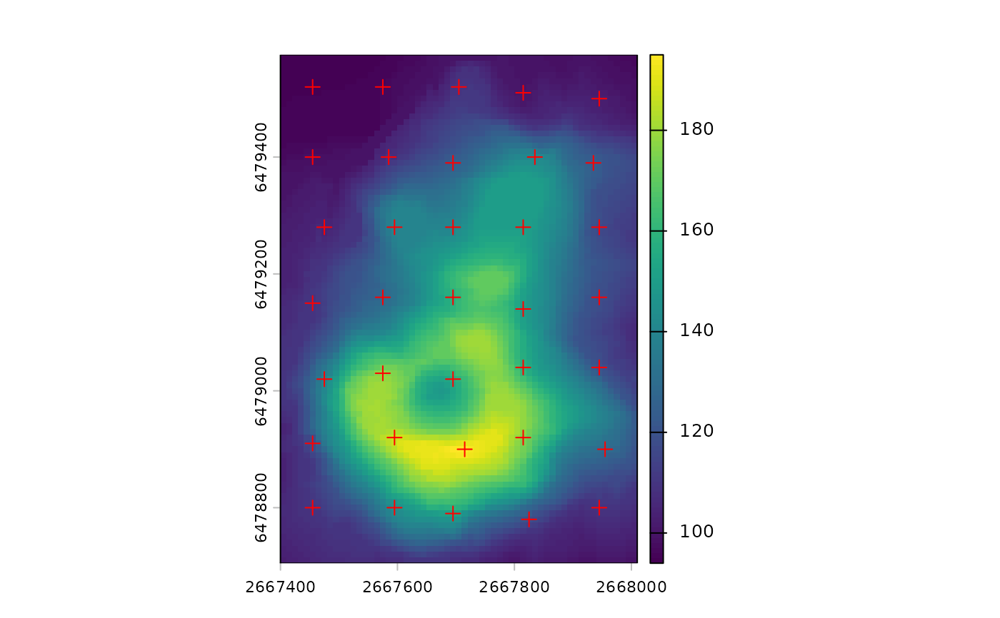

Runs the SLIC workflow and returns supercell centroids as points.
Use iter = 0 to return the initial centers before iterations.
For polygon outputs, use sc_slic; for raster IDs, use sc_slic_raster
Usage
sc_slic_points(
x,
step = NULL,
compactness,
dist_fun = "euclidean",
avg_fun = "mean",
clean = TRUE,
minarea,
iter = 10,
transform = NULL,
k = NULL,
centers = NULL,
metadata = FALSE,
chunks = FALSE,
future = FALSE,
verbose = 0,
iter_diagnostics = FALSE
)Arguments
- x
An object of class SpatRaster (terra) or class stars (stars).
- step
The distance (number of cells) between initial centers (alternative to
k).- compactness
A compactness value.
- dist_fun
A distance function name or a custom function. Supported names: "euclidean", "jsd", "dtw", "dtw2d", or any method from
philentropy::getDistMethods(). A custom function must accept two numeric vectors and return a single numeric value.- avg_fun
An averaging function name or custom function used to summarize values within each supercell. Supported names: "mean" and "median". A custom function must accept a numeric vector and return a single numeric value.
- clean
Should connectivity of the supercells be enforced?
- minarea
Minimal size of a supercell (in cells).
- iter
Number of iterations.
- transform
Optional transformation applied before segmentation. Currently supports "to_LAB" for RGB inputs.
- k
The number of supercells desired (alternative to
step).- centers
Optional sf object of custom centers. Requires
step.- metadata
Logical. Should metadata columns be kept?
- chunks
Chunking option. Use
FALSEfor no chunking,TRUEfor automatic chunking based on size, or a numeric value for a fixed chunk size (in number of cells per side).- future
Logical. Use future for parallelization?
- verbose
Verbosity level.
- iter_diagnostics
Logical. If
TRUE, returns iteration diagnostics as an attribute (iter_diagnostics) on the output. Only available when chunks are not used.
Examples
library(supercells)
vol = terra::rast(system.file("raster/volcano.tif", package = "supercells"))
init_pts = sc_slic_points(vol, step = 20, compactness = 1, iter = 1)
terra::plot(vol)
plot(sf::st_geometry(init_pts), add = TRUE, pch = 3, col = "red")

vol_pts = sc_slic_points(vol, step = 8, compactness = 1)
terra::plot(vol)
plot(sf::st_geometry(vol_pts), add = TRUE, pch = 16, cex = 0.4)